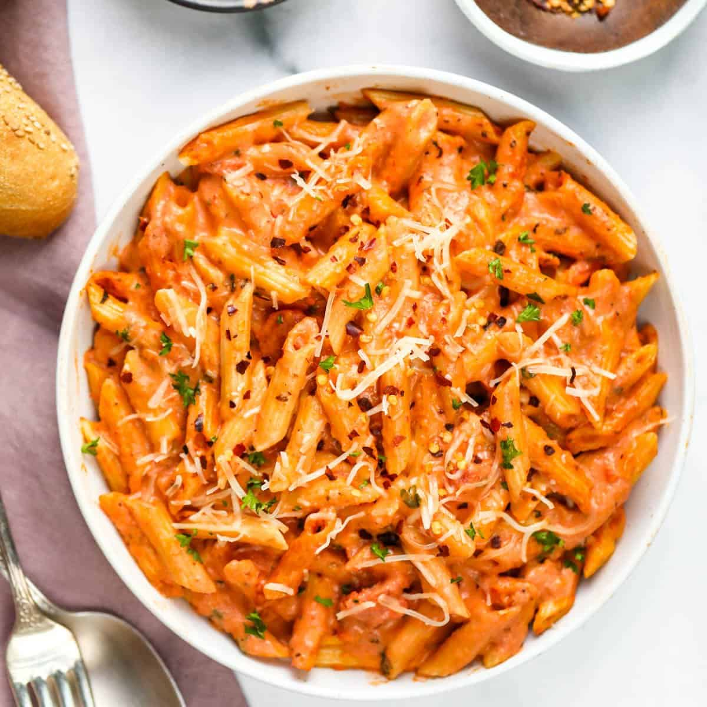

Tomato Cream Pasta
This spicy vodka pasta is a nice change from your typical tomato sauce.
Not to mention the high protein that is included as well!

Prep Time
Cook Time
Total Time
Ingredients
- 1 box of penne pasta (protein)
- 1/4 cup of olive oil
- 1 can tomato paste
- 2 cloves garlic, minced
- 1 cup heavy whipping cream
- 2 teaspoon italian seasoning
- 1 teaspoon paprika
- 1/2 teaspoon crushed red pepper flakes
- 1/2 teaspoon salt
- 2 chicken breast, cubed (optional)
- 1/2 cup mozarella cheese
- 1/2 cup parmesan cheese
Steps
-
Bring a large pot of lightly salted water to a boil. Add penne and cook,
stirring occasionally, until tender yet firm to the bite, about 11
minutes. Drain and set aside.
-
Heat oil in a large skillet over medium heat. Chop chicken into cubes
and add to the skillet. Cook and stir until crumbly and brown, 5 to 7
minutes.
-
Heat oil in skillet again over medium heat. Add garlic and red pepper
flakes; cook and stir until garlic is golden brown. Add tomato paste and
heavy cream. Bring to boil. Reduce heat and simmer for 5 minutes.
-
Add pasta to the tomato sauce and cheese. Reduce heat to low and stir
until cheese is melted.